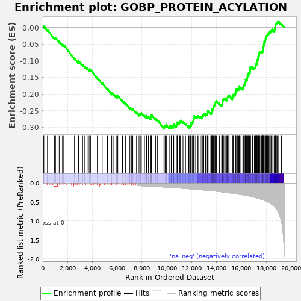
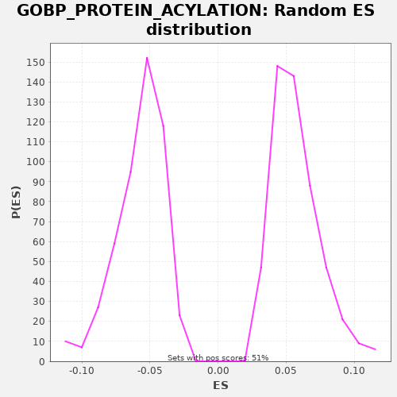

| | | Dataset | A_X_tradeoff |
| Phenotype | NoPhenotypeAvailable |
| Upregulated in class | na_neg |
| GeneSet | GOBP_PROTEIN_ACYLATION |
| Enrichment Score (ES) | -0.30464983 |
| Normalized Enrichment Score (NES) | -5.319348 |
| Nominal p-value | 0.0 |
| FDR q-value | 0.0 |
| FWER p-Value | 0.0 |
Table: GSEA Results Summary

Fig 1: Enrichment plot: GOBP_PROTEIN_ACYLATION
Profile of the Running ES Score & Positions of GeneSet Members on the Rank Ordered List
| SYMBOL | RANK IN GENE LIST | RANK METRIC SCORE | RUNNING ES | CORE ENRICHMENT | | 1 | GATA3 | 60 | -0.000 | 0.0014 | No |
| 2 | HHAT | 90 | -0.000 | 0.0045 | No |
| 3 | BAZ1A | 379 | -0.002 | -0.0059 | No |
| 4 | TAF9 | 941 | -0.005 | -0.0305 | No |
| 5 | MYOCD | 1030 | -0.006 | -0.0305 | No |
| 6 | FOXP3 | 1326 | -0.007 | -0.0413 | No |
| 7 | TADA3 | 1593 | -0.009 | -0.0505 | No |
| 8 | POLE3 | 1693 | -0.009 | -0.0511 | No |
| 9 | NAT8 | 2557 | -0.014 | -0.0914 | No |
| 10 | ZDHHC2 | 2874 | -0.016 | -0.1033 | No |
| 11 | MAP6D1 | 2884 | -0.016 | -0.0992 | No |
| 12 | RPS6KA4 | 3215 | -0.019 | -0.1118 | No |
| 13 | DIP2A | 3389 | -0.020 | -0.1162 | No |
| 14 | HHATL | 3576 | -0.021 | -0.1213 | No |
| 15 | TWIST1 | 3738 | -0.022 | -0.1251 | No |
| 16 | NAA80 | 3850 | -0.023 | -0.1263 | No |
| 17 | THAP7 | 4399 | -0.028 | -0.1503 | No |
| 18 | MCRS1 | 4791 | -0.032 | -0.1660 | No |
| 19 | NAA10 | 5213 | -0.036 | -0.1833 | No |
| 20 | FAM161A | 5560 | -0.040 | -0.1968 | No |
| 21 | TADA2A | 5674 | -0.041 | -0.1981 | No |
| 22 | AANAT | 5924 | -0.044 | -0.2064 | No |
| 23 | GLUL | 6014 | -0.045 | -0.2065 | No |
| 24 | APBB1 | 6048 | -0.046 | -0.2037 | No |
| 25 | ATAT1 | 6429 | -0.051 | -0.2188 | No |
| 26 | RAPGEF3 | 6677 | -0.054 | -0.2271 | No |
| 27 | ZDHHC12 | 7020 | -0.059 | -0.2403 | No |
| 28 | ARRB1 | 7166 | -0.061 | -0.2433 | No |
| 29 | ZDHHC6 | 7255 | -0.062 | -0.2433 | No |
| 30 | TRIM16 | 7556 | -0.066 | -0.2544 | No |
| 31 | TAF12 | 7762 | -0.069 | -0.2604 | No |
| 32 | IRF4 | 7839 | -0.070 | -0.2598 | No |
| 33 | PIWIL2 | 7905 | -0.071 | -0.2586 | No |
| 34 | MBOAT4 | 7950 | -0.072 | -0.2564 | No |
| 35 | ZDHHC1 | 8199 | -0.076 | -0.2647 | No |
| 36 | ZDHHC16 | 8362 | -0.079 | -0.2685 | No |
| 37 | FLCN | 8372 | -0.079 | -0.2644 | No |
| 38 | PER1 | 8518 | -0.082 | -0.2674 | No |
| 39 | TADA1 | 8688 | -0.084 | -0.2716 | No |
| 40 | SMARCB1 | 8692 | -0.084 | -0.2672 | No |
| 41 | JADE2 | 8744 | -0.086 | -0.2653 | No |
| 42 | NAT9 | 8761 | -0.086 | -0.2616 | No |
| 43 | SET | 9091 | -0.091 | -0.2741 | No |
| 44 | PORCN | 9234 | -0.094 | -0.2769 | No |
| 45 | ZDHHC8 | 9768 | -0.105 | -0.3001 | Yes |
| 46 | BLOC1S1 | 9791 | -0.105 | -0.2967 | Yes |
| 47 | GATA2 | 9869 | -0.107 | -0.2961 | Yes |
| 48 | SELENOK | 9927 | -0.108 | -0.2945 | Yes |
| 49 | LIF | 9961 | -0.108 | -0.2916 | Yes |
| 50 | MAPT | 10165 | -0.112 | -0.2976 | Yes |
| 51 | NAA25 | 10234 | -0.114 | -0.2966 | Yes |
| 52 | ZDHHC3 | 10354 | -0.116 | -0.2982 | Yes |
| 53 | ACTL6A | 10366 | -0.117 | -0.2942 | Yes |
| 54 | MSL1 | 10521 | -0.120 | -0.2977 | Yes |
| 55 | LEF1 | 10542 | -0.120 | -0.2941 | Yes |
| 56 | ZMPSTE24 | 10558 | -0.121 | -0.2904 | Yes |
| 57 | PARK7 | 10747 | -0.125 | -0.2956 | Yes |
| 58 | DMAP1 | 10768 | -0.126 | -0.2920 | Yes |
| 59 | DSCC1 | 10837 | -0.128 | -0.2910 | Yes |
| 60 | FOXO1 | 10838 | -0.128 | -0.2864 | Yes |
| 61 | SGF29 | 10864 | -0.128 | -0.2832 | Yes |
| 62 | KAT8 | 11000 | -0.132 | -0.2856 | Yes |
| 63 | SUPT7L | 11040 | -0.133 | -0.2831 | Yes |
| 64 | HAT1 | 11094 | -0.134 | -0.2813 | Yes |
| 65 | TAF6L | 11132 | -0.135 | -0.2786 | Yes |
| 66 | PHF20 | 11303 | -0.139 | -0.2829 | Yes |
| 67 | IL1B | 11507 | -0.144 | -0.2889 | Yes |
| 68 | RPS6KA5 | 11764 | -0.151 | -0.2976 | Yes |
| 69 | TAF10 | 11792 | -0.152 | -0.2945 | Yes |
| 70 | KLF15 | 11915 | -0.155 | -0.2963 | Yes |
| 71 | TAF6 | 11947 | -0.155 | -0.2933 | Yes |
| 72 | ZDHHC18 | 11950 | -0.155 | -0.2888 | Yes |
| 73 | ZDHHC7 | 11958 | -0.156 | -0.2846 | Yes |
| 74 | KAT2A | 12041 | -0.158 | -0.2843 | Yes |
| 75 | TAF5 | 12094 | -0.159 | -0.2825 | Yes |
| 76 | KANSL1L | 12123 | -0.160 | -0.2794 | Yes |
| 77 | MAPK3 | 12124 | -0.160 | -0.2748 | Yes |
| 78 | KAT5 | 12162 | -0.161 | -0.2722 | Yes |
| 79 | KAT2B | 12203 | -0.162 | -0.2697 | Yes |
| 80 | PPARGC1A | 12207 | -0.162 | -0.2653 | Yes |
| 81 | SPHK1 | 12323 | -0.165 | -0.2667 | Yes |
| 82 | KANSL2 | 12451 | -0.169 | -0.2687 | Yes |
| 83 | ZDHHC20 | 12482 | -0.170 | -0.2657 | Yes |
| 84 | PYGO2 | 12565 | -0.172 | -0.2654 | Yes |
| 85 | PIH1D1 | 12704 | -0.176 | -0.2680 | Yes |
| 86 | BRCA2 | 12814 | -0.179 | -0.2691 | Yes |
| 87 | ISL1 | 12837 | -0.180 | -0.2657 | Yes |
| 88 | CDYL | 12896 | -0.181 | -0.2641 | Yes |
| 89 | OGDH | 12940 | -0.182 | -0.2618 | Yes |
| 90 | MSL3 | 12974 | -0.183 | -0.2589 | Yes |
| 91 | PRKAA1 | 13127 | -0.188 | -0.2623 | Yes |
| 92 | KAT14 | 13159 | -0.189 | -0.2593 | Yes |
| 93 | ZDHHC15 | 13256 | -0.193 | -0.2598 | Yes |
| 94 | HINT2 | 13282 | -0.193 | -0.2565 | Yes |
| 95 | SPHK2 | 13297 | -0.194 | -0.2527 | Yes |
| 96 | WDR5 | 13328 | -0.195 | -0.2496 | Yes |
| 97 | BEND3 | 13542 | -0.202 | -0.2562 | Yes |
| 98 | BAG6 | 13613 | -0.205 | -0.2552 | Yes |
| 99 | RUVBL2 | 13625 | -0.205 | -0.2512 | Yes |
| 100 | MCM3AP | 13644 | -0.206 | -0.2476 | Yes |
| 101 | NAA35 | 13672 | -0.207 | -0.2444 | Yes |
| 102 | ZDHHC4 | 13730 | -0.208 | -0.2428 | Yes |
| 103 | SPI1 | 13740 | -0.208 | -0.2387 | Yes |
| 104 | ZDHHC24 | 13777 | -0.210 | -0.2360 | Yes |
| 105 | ARNTL | 13816 | -0.211 | -0.2335 | Yes |
| 106 | ESCO1 | 13833 | -0.212 | -0.2297 | Yes |
| 107 | WBP2 | 13913 | -0.214 | -0.2293 | Yes |
| 108 | YEATS2 | 13919 | -0.214 | -0.2250 | Yes |
| 109 | PCGF2 | 13938 | -0.215 | -0.2213 | Yes |
| 110 | PPM1B | 13993 | -0.217 | -0.2196 | Yes |
| 111 | DLST | 14243 | -0.226 | -0.2279 | Yes |
| 112 | NAA60 | 14417 | -0.233 | -0.2324 | Yes |
| 113 | ATG5 | 14468 | -0.235 | -0.2304 | Yes |
| 114 | GOLGA7 | 14481 | -0.235 | -0.2265 | Yes |
| 115 | MRGBP | 14498 | -0.236 | -0.2227 | Yes |
| 116 | NAA16 | 14505 | -0.236 | -0.2185 | Yes |
| 117 | GTF2B | 14542 | -0.237 | -0.2158 | Yes |
| 118 | SETD5 | 14596 | -0.240 | -0.2140 | Yes |
| 119 | ING4 | 14701 | -0.245 | -0.2148 | Yes |
| 120 | PPM1A | 14812 | -0.250 | -0.2160 | Yes |
| 121 | TADA2B | 14870 | -0.252 | -0.2144 | Yes |
| 122 | ZDHHC13 | 14889 | -0.253 | -0.2107 | Yes |
| 123 | ING3 | 14902 | -0.254 | -0.2068 | Yes |
| 124 | BRPF3 | 14946 | -0.256 | -0.2045 | Yes |
| 125 | CHEK1 | 15021 | -0.259 | -0.2037 | Yes |
| 126 | PHF14 | 15270 | -0.270 | -0.2121 | Yes |
| 127 | NAA30 | 15284 | -0.271 | -0.2082 | Yes |
| 128 | NOC2L | 15333 | -0.273 | -0.2061 | Yes |
| 129 | ZDHHC14 | 15344 | -0.274 | -0.2021 | Yes |
| 130 | TAF5L | 15399 | -0.276 | -0.2003 | Yes |
| 131 | HDAC2 | 15504 | -0.281 | -0.2011 | Yes |
| 132 | MORF4L1 | 15506 | -0.281 | -0.1966 | Yes |
| 133 | NAT10 | 15535 | -0.282 | -0.1935 | Yes |
| 134 | KAT6B | 15564 | -0.284 | -0.1904 | Yes |
| 135 | SIRT1 | 15568 | -0.284 | -0.1860 | Yes |
| 136 | CRTC2 | 15676 | -0.289 | -0.1870 | Yes |
| 137 | ZDHHC5 | 15714 | -0.291 | -0.1843 | Yes |
| 138 | KANSL3 | 15789 | -0.295 | -0.1836 | Yes |
| 139 | DLD | 15825 | -0.297 | -0.1809 | Yes |
| 140 | NMT1 | 15847 | -0.298 | -0.1774 | Yes |
| 141 | ZDHHC17 | 15968 | -0.304 | -0.1791 | Yes |
| 142 | ESCO2 | 16125 | -0.312 | -0.1826 | Yes |
| 143 | OGT | 16147 | -0.314 | -0.1792 | Yes |
| 144 | MSL2 | 16194 | -0.316 | -0.1770 | Yes |
| 145 | ING5 | 16210 | -0.317 | -0.1732 | Yes |
| 146 | CEP295 | 16243 | -0.319 | -0.1703 | Yes |
| 147 | ZDHHC9 | 16302 | -0.322 | -0.1687 | Yes |
| 148 | IWS1 | 16333 | -0.324 | -0.1657 | Yes |
| 149 | TERF2IP | 16337 | -0.324 | -0.1613 | Yes |
| 150 | SMAD4 | 16343 | -0.325 | -0.1570 | Yes |
| 151 | NCOA3 | 16418 | -0.329 | -0.1563 | Yes |
| 152 | JADE3 | 16460 | -0.332 | -0.1539 | Yes |
| 153 | BRPF1 | 16479 | -0.333 | -0.1502 | Yes |
| 154 | BRD7 | 16483 | -0.333 | -0.1458 | Yes |
| 155 | USP22 | 16529 | -0.336 | -0.1436 | Yes |
| 156 | GTF3C4 | 16549 | -0.337 | -0.1400 | Yes |
| 157 | NAP1L2 | 16577 | -0.340 | -0.1369 | Yes |
| 158 | MBD3 | 16665 | -0.347 | -0.1368 | Yes |
| 159 | CLIP3 | 16699 | -0.349 | -0.1340 | Yes |
| 160 | CHD5 | 16701 | -0.349 | -0.1294 | Yes |
| 161 | PAXIP1 | 16721 | -0.351 | -0.1259 | Yes |
| 162 | PRKAA2 | 16723 | -0.351 | -0.1214 | Yes |
| 163 | BRD1 | 16745 | -0.352 | -0.1179 | Yes |
| 164 | NAA40 | 16893 | -0.362 | -0.1210 | Yes |
| 165 | NAA15 | 16905 | -0.363 | -0.1170 | Yes |
| 166 | SIN3A | 17054 | -0.375 | -0.1201 | Yes |
| 167 | NMT2 | 17115 | -0.380 | -0.1186 | Yes |
| 168 | CLOCK | 17141 | -0.382 | -0.1154 | Yes |
| 169 | KANSL1 | 17162 | -0.384 | -0.1119 | Yes |
| 170 | ATF2 | 17196 | -0.387 | -0.1090 | Yes |
| 171 | NCOA1 | 17253 | -0.392 | -0.1073 | Yes |
| 172 | MECP2 | 17260 | -0.392 | -0.1031 | Yes |
| 173 | BRCA1 | 17269 | -0.393 | -0.0989 | Yes |
| 174 | YEATS4 | 17308 | -0.397 | -0.0963 | Yes |
| 175 | MEAF6 | 17338 | -0.399 | -0.0933 | Yes |
| 176 | TAF7 | 17364 | -0.403 | -0.0900 | Yes |
| 177 | DR1 | 17369 | -0.403 | -0.0857 | Yes |
| 178 | CTBP1 | 17393 | -0.405 | -0.0823 | Yes |
| 179 | HCFC1 | 17445 | -0.411 | -0.0804 | Yes |
| 180 | EP300 | 17453 | -0.412 | -0.0762 | Yes |
| 181 | EP400 | 17482 | -0.415 | -0.0731 | Yes |
| 182 | MORF4L2 | 17567 | -0.423 | -0.0729 | Yes |
| 183 | MAP3K7 | 17640 | -0.431 | -0.0720 | Yes |
| 184 | SOX4 | 17713 | -0.438 | -0.0712 | Yes |
| 185 | TAOK1 | 17729 | -0.441 | -0.0674 | Yes |
| 186 | KAT7 | 17738 | -0.442 | -0.0633 | Yes |
| 187 | EPC2 | 17746 | -0.443 | -0.0591 | Yes |
| 188 | CREBBP | 17787 | -0.447 | -0.0566 | Yes |
| 189 | DIP2B | 17805 | -0.449 | -0.0529 | Yes |
| 190 | TRRAP | 17815 | -0.450 | -0.0488 | Yes |
| 191 | TAF1 | 17844 | -0.453 | -0.0457 | Yes |
| 192 | ZDHHC21 | 17846 | -0.454 | -0.0412 | Yes |
| 193 | PHF20L1 | 17933 | -0.465 | -0.0411 | Yes |
| 194 | EPC1 | 17940 | -0.466 | -0.0368 | Yes |
| 195 | ZZZ3 | 17951 | -0.468 | -0.0328 | Yes |
| 196 | AUTS2 | 17986 | -0.472 | -0.0300 | Yes |
| 197 | LDB1 | 18021 | -0.477 | -0.0272 | Yes |
| 198 | SRCAP | 18044 | -0.481 | -0.0238 | Yes |
| 199 | CAMK1 | 18106 | -0.492 | -0.0224 | Yes |
| 200 | RUVBL1 | 18112 | -0.493 | -0.0181 | Yes |
| 201 | CTCF | 18189 | -0.505 | -0.0175 | Yes |
| 202 | NAA20 | 18224 | -0.511 | -0.0147 | Yes |
| 203 | MBIP | 18288 | -0.525 | -0.0134 | Yes |
| 204 | SMC5 | 18336 | -0.535 | -0.0113 | Yes |
| 205 | ZDHHC23 | 18403 | -0.549 | -0.0101 | Yes |
| 206 | NAA50 | 18445 | -0.556 | -0.0077 | Yes |
| 207 | KAT6A | 18477 | -0.564 | -0.0047 | Yes |
| 208 | GLYR1 | 18644 | -0.613 | -0.0088 | Yes |
| 209 | EID1 | 18682 | -0.623 | -0.0061 | Yes |
| 210 | DDX3X | 18704 | -0.632 | -0.0027 | Yes |
| 211 | JADE1 | 18722 | -0.637 | 0.0010 | Yes |
| 212 | BRD8 | 18745 | -0.646 | 0.0044 | Yes |
| 213 | KMT2A | 18759 | -0.649 | 0.0083 | Yes |
| 214 | ACTL6B | 18774 | -0.656 | 0.0122 | Yes |
| 215 | NUPR1 | 18832 | -0.685 | 0.0138 | Yes |
| 216 | GOLGA7B | 18904 | -0.719 | 0.0146 | Yes |
| 217 | MUC1 | 18935 | -0.739 | 0.0176 | Yes |
| 218 | GSK3B | 19016 | -0.783 | 0.0180 | Yes |
| 219 | SNCA | 19238 | -1.018 | 0.0111 | Yes |
Table: GSEA details [plain text format]

Fig 2: GOBP_PROTEIN_ACYLATION: Random ES distribution
Gene set null distribution of ES for GOBP_PROTEIN_ACYLATION